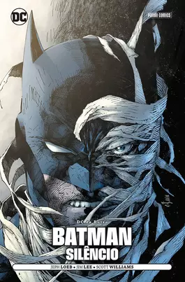

Batman: Silêncio
Os piores criminosos de Gotham City parecem decididos a perturbar a vida de Batman. Mas seus ataques repetidos fazem, na verdade, parte de um plano diabólico arquitetado por uma figura misteriosa: Silêncio, um inimigo aparentemente muito próximo de Bruce Wayne e determinado a destruir o Cavaleiro das Trevas de uma vez por todas. Empurrado além de todos os seus limites físicos e psicológicos, Batman é desafiado a usar todas as habilidades que o tornaram o maior detetive do mundo. A saga com a qual Jeph Loeb (Batman: O Longo Dia das Bruxas) e Jim Lee (Liga da Justiça da América) redefiniram a imagem de Batman para o século 21!